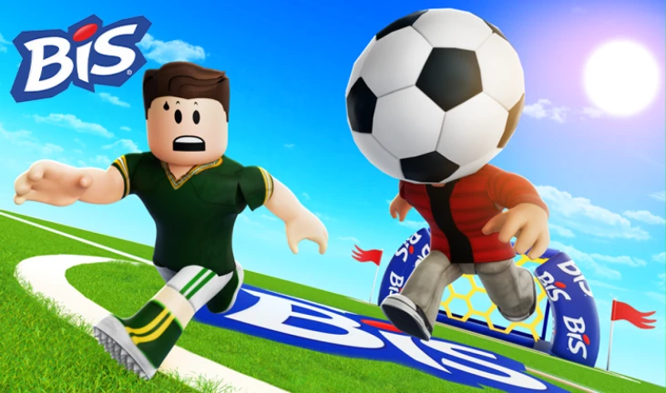
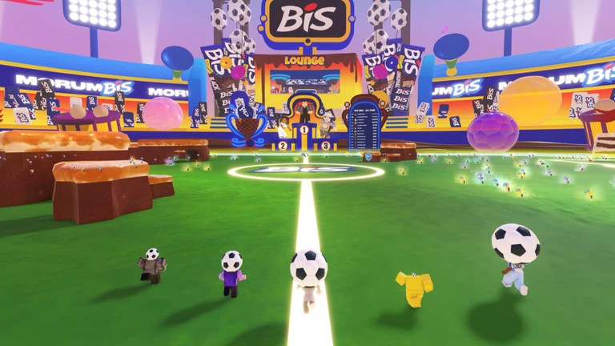
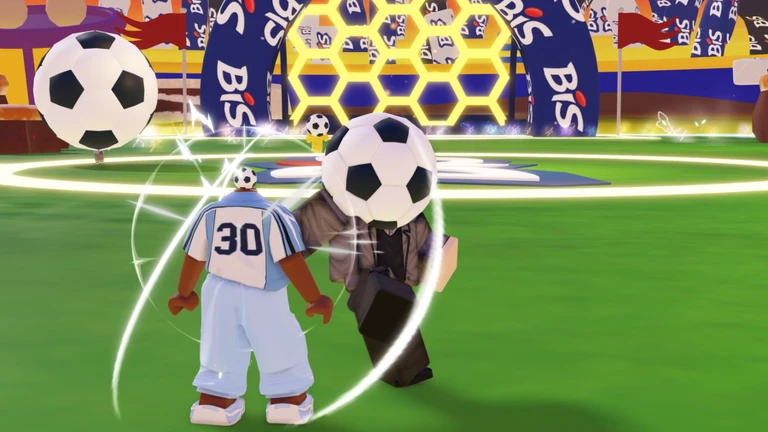

Overview
Project summary
I worked on programming and studio development, reusing the Rewarded Playables framework while developing soccer-themed gameplay features for this experience.

Programmer
Rewarded Playables project with soccer-themed mechanics including energy gathering, ball-head growth, kicking, and goal scoring.
Overview
I worked on programming and studio development, reusing the Rewarded Playables framework while developing soccer-themed gameplay features for this experience.
Systems
Built or supported systems where players gather energy to grow their soccer ball head.
Developed soccer-themed interactions where players kick other players to score goals.
Extended the shared Rewarded Playables framework for a new branded gameplay loop.
Supported Studio-side programming and implementation for the release.
Media
Media example from MorumBIS.

Media example from MorumBIS.

Media example from MorumBIS.